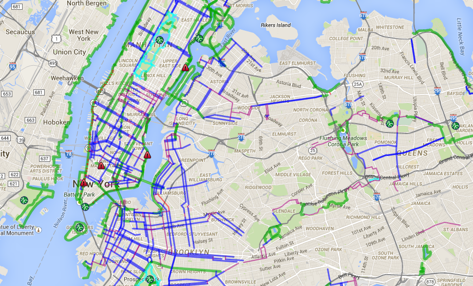

Interactive Maps with Python
New York edition
Made with️ ❤️ in Oradea, © 2020 Corbu Sergiu
→Unlock a bike
Why Interactive Maps?
Unlock the traffic problem in NYC
-
Real time traffic congestion and station availability predictions
This project can be adapted to all the needs the customer will request, being able to show multiple layers or custom maps.
-
Accurate data interpretation & reports
Every data analyst will find this application a great tool in their day to day problems, such as finding block-points or spotting the undercapacitated stations.

The core technology of the project
You can see a monthly simulation of all the bike trips by hour and other interactive maps
powered by Python, Folium and some web develompent technologies such as HTML, CSS, JavaScript and WebSlides.